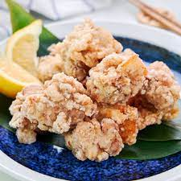

Karaage

Japanese inspired Fried Chicken
It's light, crispy, marinated with lots of garlic and ginger, covered by potato starch. Amazing snack for movie days
Ingredients
- Chicken thighs for best effect
- Garlic
- Soy Sauce
- Ginger
- Potato Starch
Steps
- Marinade the Chicken in garlic ginger etc
- 30 mins chill in fridge
- Coat chicken with starch
- Fry Chicken (Hot Oil)
- Drain the Oil, Season as Necessary